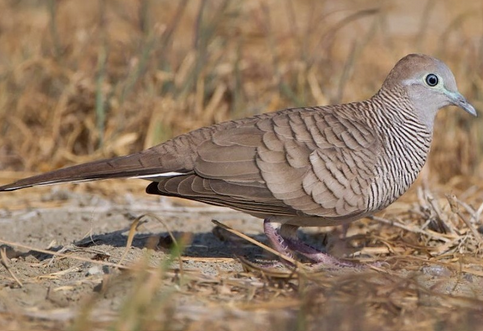
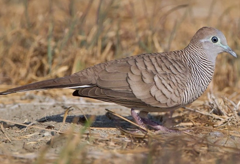

Jikalau aku mendengarkan burung Perkutut menyanyi di pohon ditiup angin yang sepoi-sepoi bukan lagi
aku mendengarkan burung Perkutut Aku mendengarkan Indonesia
~ Soekarno - Presiden RI I ~
Burung Perkutut Jawa dengan nama latin Geopelia striata bukan hanya burung yang mampu bersuara, akan tetapi burung ini mempunyai beragam keunikan yang tidak dimiliki oleh burung lainnya. Bagi sebagian pemelihara burung, dengan hanya melihat perkutut, sudah bisa memastikan bagaimana suara yang akan dihasilkan. Salah satu kebiasaan dari burung ini adalah terbang dan bertengger di kebun atau ladang. Selain itu, mereka juga sering mencari makan di jalan yang jarang dilintasi oleh manusia
Perkutut Jawa hidup berpasangan atau kelompok kecil. Perkutut jawa makan di permukaan tanah. Kadang mereka berkumpul untuk minum di sumber air. Sarangnya berbentuk datar tipis dan terbuat dari ranting-ranting. Telur berwarna putih, jumlah 2 butir. Perkutut jawa berbiak pada bulan Januari-September.
Burung Perkutut Jawa dengan nama latin Geopelia striata bukan hanya burung yang mampu bersuara, akan tetapi burung ini mempunyai beragam keunikan yang tidak dimiliki oleh burung lainnya. Bagi sebagian pemelihara burung, dengan hanya melihat perkutut, sudah bisa memastikan bagaimana suara yang akan dihasilkan. Salah satu kebiasaan dari burung ini adalah terbang dan bertengger di kebun atau ladang. Selain itu, mereka juga sering mencari makan di jalan yang jarang dilintasi oleh manusia
Perkutut Jawa hidup berpasangan atau kelompok kecil. Perkutut jawa makan di permukaan tanah. Kadang mereka berkumpul untuk minum di sumber air.Sarangnya berbentuk datar tipis dan terbuat dari ranting-ranting. Telur berwarna putih, jumlah 2 butir. Perkutut jawa berbiak pada bulan Januari-September.
Bibit atau indukan burung perkutut yang akan dibudidayakan haruslah telah berumur ideal yaitu minimal berumur 4 bulan dan sebaiknya betina lebih tua dari jantan. Selain itu pilihlah bibit yang baik agar hasilnya juga baik, berikut ciri-ciri indukan perkutut yang baik
Kandang yang digunakan untuk budidaya biasanya adalah kandang dengan ukuran tinggi bervariasi antara 45-180 cm, lebar 60 cm, panjang antara 100-180 cm, lantainya terbuat dari pasir atau tanah dan ataonya berupa asbes atau genting.
Untuk menjodohkan burung perkutut ini, pertama masukkan perkutut yang akan dijodohkan ke dalam kandang ternak pada saat sore hari. Nemun perlu diperhatikan sebelum dimasukkan ke dalam kandang ternak kedua perkutut yang akan dijodohkan terlebih dahulu diberikan kacang hijau lunak, minyak ikan, vitamin E dan badannya dibasahi sedikit
Piyik atau anakan burung yang baru menetas, sebaiknya dipisahkan terlebih dahulu dari induknya jika sudah berumur 1-1,5 bulan. Pada usia tersebut, piyik biasanya sudah bisa makan sendiri. Tempatkan piyik dalam sangkar yang memiliki ukuran sekitar 50 cm x 70 cm x 50 cm dengan dalam satu sangkar diletakkan 8 sampai 10 ekor piyik burung perkutut
 
